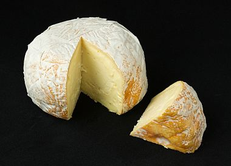

From today's featured article
Defense of the Ancients (DotA) is a multiplayer online battle arena mod, or game modification, created for the video game Warcraft III: Reign of Chaos and its expansion, Warcraft III: The Frozen Throne. First released in 2003, it is based on StarCraft custom map "Aeon of Strife". Each team of up to five players attempts to destroy the opponents' Ancient, a heavily guarded structure at a far corner of the map. Players use powerful units known as heroes, and are assisted by allied heroes and AI-controlled fighters. As in role-playing games, players level up their heroes and use gold to buy items and equipment during the game. DotA became a feature at several worldwide tournaments, including Blizzard Entertainment's BlizzCon, and was featured at the Asian World Cyber Games and in the Cyberathlete Amateur League. Valve Corporation acquired the intellectual property rights to DotA to develop a stand-alone sequel, Dota 2, released in July 2013. (Full article...)
Did you know...
- ... that Slovenian ski jumper Peter Prevc (pictured) became the first athlete to land a jump of 250 metres (820 ft)?... that in the United States, nuclear weapons are moved by trucks called Safeguards Transporters which were designed by the Sandia National Laboratories?
- ... that in the United States, nuclear weapons are moved by trucks called Safeguards Transporters which were designed by the Sandia National Laboratories?
- ... that C. Washington Eves was the honorary commissioner for Jamaica at the Colonial and Indian Exhibition of 1886?
- ... that when the condensate of boron monofluoride monoxide is reheated, it forms a glassy, popcorn-like froth?
- ... that on her appointment in February 2016, 22-year-old Shamma Al Mazrui became the youngest government minister in the world?
- ... that Irish immigrant, anarchist, strike organiser, and New York surgeon Gertrude Kelly is commemorated by a children's park in Chelsea, Manhattan?
- ... that the Cafe Royal Cocktail Book contains one of the first recorded recipes for the 20th Century?
In the news
- An attack on a nightclub (pictured) in Istanbul, Turkey, during New Year's celebrations, kills at least 39 people and injures more than 70 others.
- American actress, screenwriter, and author Carrie Fisher dies at the age of 60, and her mother, actress and singer Debbie Reynolds, dies one day later at the age of 84.
- English singer, songwriter, and record producer George Michael dies at the age of 53.
- A Tupolev Tu-154 crashes near Sochi, Russia, killing all 92 people on board, including 64 members of the Alexandrov Ensemble.
On this day...
January 5
- 1757 – Louis XV of France survived an assassination attempt by Robert-François Damiens, who later became the last person to be executed in the country by drawing and quartering.
- 1919 – The German Workers' Party, the forerunner to the Nazi Party, was founded by Anton Drexler.
- 1949 – In his State of the Union speech, U.S. President Harry S. Truman (pictured) announced, "Every segment of our population, and every individual, has a right to expect from his government a fair deal."
- 1991 – Georgian troops attacked Tskhinvali, the capital of South Ossetia, opening the 1991–1992 South Ossetia War.
- 2003 – London police arrested six people in conjunction with an alleged terrorist plot to release ricin on the Underground, although none was actually found.
Today's featured picture
Red Hawk cheese is an aged triple-crème cow's milk cheese with a brine-washed rind. Its name originates from its red-orange rind, which is encouraged by the brine wash. Photograph: Frank Schulenburg